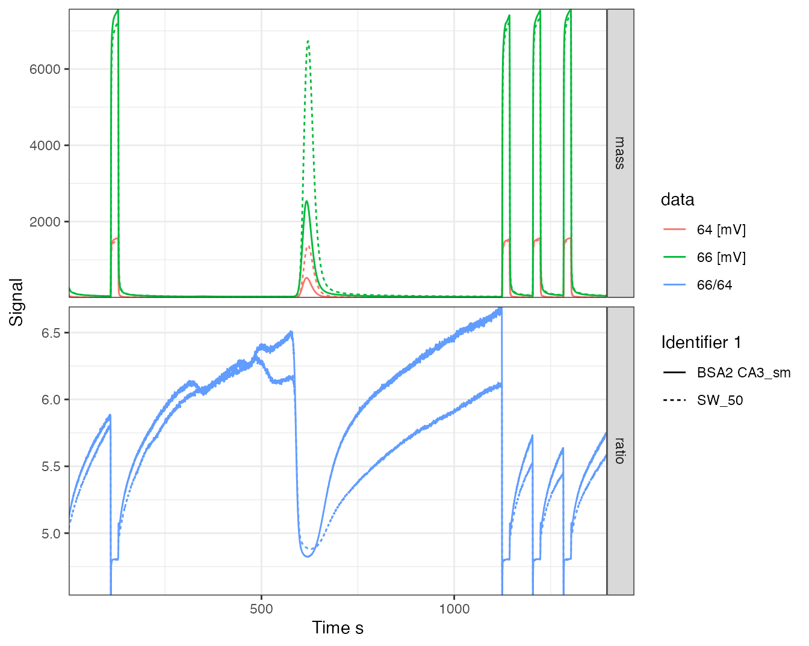
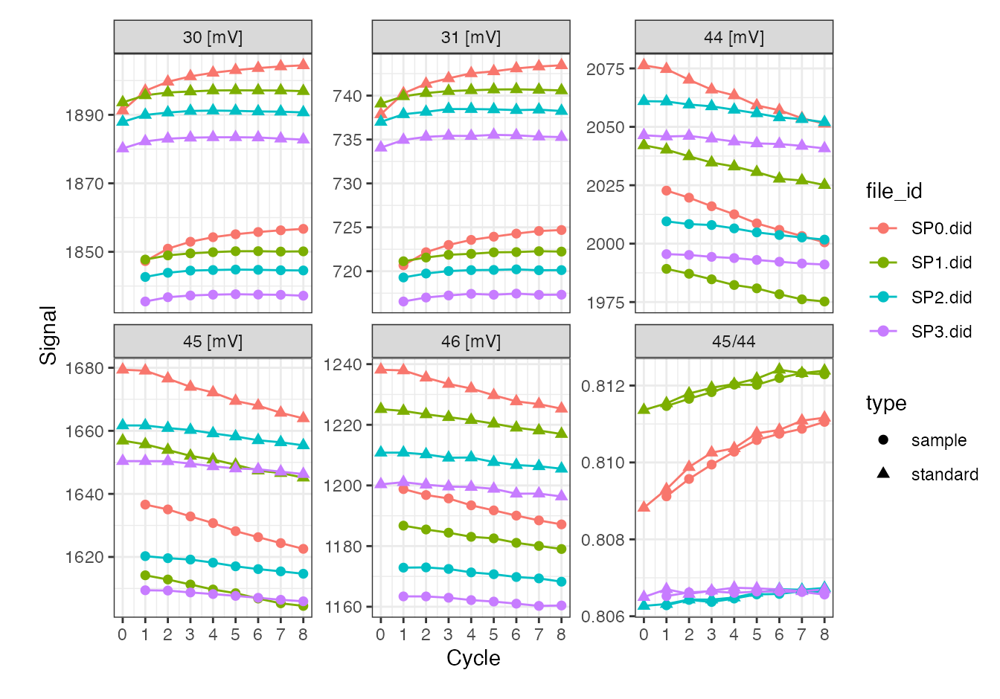

vignettes/isodat_calculations.Rmd
isodat_calculations.Rmd
library(isoreader) # isoreader.isoverse.org
library(isoprocessor) # isoprocessor.isoverse.org
library(tidyverse)
knitr::opts_chunk$set(collapse = TRUE, comment = "#>")Using isoreader version 1.3.1 and isoprocessor version 0.6.11.
iso_files <- iso_read_continuous_flow("data")
#> Info: preparing to read 2 data files (all will be cached)...
#> Info: reading file 'data/21848__SW_50.dxf' with '.dxf' reader...
#> Info: reading file 'data/21870__BSA2 CA3_sm.dxf' with '.dxf' reader...
#> Info: finished reading 2 files in 3.15 secs
iso_files %>% iso_get_data_summary()
#> Info: aggregating data summary from 2 data file(s)
#> # A tibble: 2 × 6
#> file_id raw_data file_info method_info vendor_data_tab… file_path
#> <chr> <glue> <chr> <chr> <chr> <chr>
#> 1 21848__SW… 6681 time po… 19 entries standards, … 5 rows, 30 colu… data/21848_…
#> 2 21870__BS… 6681 time po… 20 entries standards, … 5 rows, 30 colu… data/21870_…
iso_files %>%
iso_calculate_ratios("66/64") %>%
iso_plot_continuous_flow_data(panel = category, color = data, linetype = `Identifier 1`)
#> Info: calculating ratio(s) in 2 data file(s): r66/64
iso_files %>% iso_get_file_info(
select = c(
dt = file_datetime,
Analysis,
starts_with("Ident"),
matches("Method")
)
)
#> Info: aggregating file info from 2 data file(s), selecting info columns 'c(dt = file_datetime, Analysis, starts_with("Ident"), matches("Method"))'
#> # A tibble: 2 × 7
#> file_id dt Analysis `Identifier 1` `Identifier 2` `EA Method`
#> <chr> <dttm> <chr> <chr> <chr> <chr>
#> 1 21848_… 2018-04-27 22:32:52 21848 SW_50 3 FFW_SO2_no…
#> 2 21870_… 2018-04-28 07:36:05 21870 BSA2 CA3_sm 25 FFW_SO2_no…
#> # … with 1 more variable: Method <chr>
iso_files %>% iso_get_resistors()
#> Info: aggregating resistors info from 2 data file(s)
#> # A tibble: 4 × 4
#> file_id cup R.Ohm mass
#> <chr> <int> <dbl> <chr>
#> 1 21848__SW_50.dxf 1 300000000 64
#> 2 21848__SW_50.dxf 2 30000000000 66
#> 3 21870__BSA2 CA3_sm.dxf 1 300000000 64
#> 4 21870__BSA2 CA3_sm.dxf 2 30000000000 66
iso_files %>% iso_get_standards()
#> Info: aggregating standards info from 2 data file(s)
#> # A tibble: 8 × 9
#> file_id standard gas delta_name delta_value reference element ratio_name
#> <chr> <chr> <chr> <chr> <dbl> <chr> <chr> <chr>
#> 1 21848__SW_… SO2_zero SO2 d 18O/16O 0 VSMOW H R 2H/1H
#> 2 21848__SW_… SO2_zero SO2 d 18O/16O 0 VSMOW O R 17O/16O
#> 3 21848__SW_… SO2_zero SO2 d 18O/16O 0 VSMOW O R 18O/16O
#> 4 21848__SW_… SO2_zero SO2 d 34S/32S 0 VCDT S R 34S/32S
#> 5 21870__BSA… SO2_zero SO2 d 18O/16O 0 VSMOW H R 2H/1H
#> 6 21870__BSA… SO2_zero SO2 d 18O/16O 0 VSMOW O R 17O/16O
#> 7 21870__BSA… SO2_zero SO2 d 18O/16O 0 VSMOW O R 18O/16O
#> 8 21870__BSA… SO2_zero SO2 d 34S/32S 0 VCDT S R 34S/32S
#> # … with 1 more variable: ratio_value <dbl>
iso_files %>% iso_get_vendor_data_table(with_explicit_units = TRUE)
#> Info: aggregating vendor data table with explicit units from 2 data file(s)
#> # A tibble: 10 × 31
#> file_id Nr. `Start [s]` `Rt [s]` `End [s]` `Ampl 64 [mV]` `Ampl 66 [mV]`
#> <chr> <int> <dbl> <dbl> <dbl> <dbl> <dbl>
#> 1 21848__SW… 1 108. 128. 184. 1503. 7209.
#> 2 21848__SW… 2 585. 621. 754. 1372. 6697.
#> 3 21848__SW… 3 1123. 1143. 1201. 1501. 7200.
#> 4 21848__SW… 4 1203. 1223. 1282. 1523. 7307.
#> 5 21848__SW… 5 1282. 1302. 1373. 1532. 7350.
#> 6 21870__BS… 1 108. 128. 188. 1565. 7512.
#> 7 21870__BS… 2 583. 617. 715. 521. 2503.
#> 8 21870__BS… 3 1123. 1143. 1198. 1538. 7383.
#> 9 21870__BS… 4 1203. 1223. 1281. 1559. 7483.
#> 10 21870__BS… 5 1282. 1302. 1366. 1565. 7514.
#> # … with 24 more variables: BGD 64 [mV] <dbl>, BGD 66 [mV] <dbl>,
#> # rIntensity 64 [mVs] <dbl>, rIntensity 66 [mVs] <dbl>,
#> # rIntensity All [mVs] <dbl>, Intensity 64 [Vs] <dbl>,
#> # Intensity 66 [Vs] <dbl>, Intensity All [Vs] <dbl>,
#> # Sample Dilution [%] <dbl>, List First Peak <int>, rR 66SO2/64SO2 <dbl>,
#> # Rps 66SO2/64SO2 <dbl>, Is Ref.? <int>, R 66SO2/64SO2 <dbl>,
#> # Ref. Name <chr>, rd 66SO2/64SO2 [permil] <dbl>, …These are the calculations that Isodat does. Not saying they are correct, it’s just what it does.
# retrieve data table, resistors and standards, the relevant data for the calculations
all_data <-
iso_files %>%
iso_get_all_data() %>%
select(file_id, resistors, standards, vendor_data_table)
#> Info: aggregating all data from 2 data file(s)
all_data
#> # A tibble: 2 × 4
#> file_id resistors standards vendor_data_table
#> <chr> <list> <list> <list>
#> 1 21848__SW_50.dxf <tibble [2 × 3]> <tibble [4 × 8]> <tibble [5 × 30]>
#> 2 21870__BSA2 CA3_sm.dxf <tibble [2 × 3]> <tibble [4 × 8]> <tibble [5 × 30]>
# calculations
calculations <-
all_data %>%
# unpack the vendor data table
unnest(vendor_data_table) %>%
# do each set of calculations within each file
group_by(file_id) %>%
# do all the calculations
# only columns required for all of the following are rIntensity 64
# and rIntensity 66 (+ resistors and standards)
mutate(
# rIntensity All is just the sum of the r(ecorded) intensities
`rIntensity All new` = `rIntensity 64` + `rIntensity 66`,
# the intensity of the major ion is just scaled from mVs to Vs
`Intensity 64 new` = `rIntensity 64` / 1000,
# the other intensities are scaled by the resistor ratio to account for
# different signal amplification
resistor_ratio = map_dbl(
resistors,
~with(.x, R.Ohm[mass == "64"] / R.Ohm[mass == "66"])),
`Intensity 66 new` = `rIntensity 66` / 1000 * resistor_ratio,
# IntensityAll then again is just the some of the scaled intensities
`Intensity All new` = `Intensity 64 new` + `Intensity 66 new`,
# the r(ecorded) ratio is just based on the r(ecorded)Intensities
`rR 66SO2/64SO2 new` = `rIntensity 66` / `rIntensity 64`,
# whereas the actual Ratio is based on known reference ratios and linear
# extrapolation (as far as I can tell) between the reference peaks
## 1. known isotopic composition of the ref peaks (Rps)
`Rps 66SO2/64SO2 new` = map2_dbl(
standards, `Is Ref.?`,
# nb 1: they only calculate this for reference peaks (silly anyways,
# it's always the same!)
# nb 2: the SO2 ref gas here (SO2_zero) was defined with delta of 0 in
# both S and O, hence using the ref ratios directly in the following calculation
# nb 3: note that isodat does not consider the isotopologue 64=32+17+17
# so their ratio is actually slightly wrong!!
~ with(.x, ratio_value[ratio_name == "R 34S/32S"] +
2 * ratio_value[ratio_name == "R 18O/16O"])
# correct would be the following (but the difference is in the 7th digit,
# see for yourself what difference it makes in the final deltas):
#~ with(.x, ratio_value[ratio_name == "R 34S/32S"] + 2 * ratio_value[ratio_name == "R 18O/16O"] + ratio_value[ratio_name == "R 17O/16O"]^2)
),
## 2. linearly extrapolated ref ratio at all retention times
ref_ratio_at_Rt =
lm(y ~ x,
data = tibble(
x = Rt[`Is Ref.?` == 1],
y = `rR 66SO2/64SO2 new`[`Is Ref.?` == 1])) %>%
predict(newdata = tibble(x = Rt)) %>%
as.numeric(),
## 3. resulting calculated 66/64 ratio (note that since these relie on rR only,
# the whole resistor shenanegans are not actually necessary)
`R 66SO2/64SO2 new` = `rR 66SO2/64SO2 new` / ref_ratio_at_Rt * `Rps 66SO2/64SO2 new`,
# the delta value is then just calculated based on the standard definition R/R - 1)
`d 66SO2/64SO2 new` = ((`R 66SO2/64SO2 new` / `Rps 66SO2/64SO2 new` - 1) * 1000) %>%
# due to inacuracies at the 10^-13 level in most machine calculations, rounding to 10 digits
round(10),
# or more elegantly directly from the rR and extrapolated ref ratios
`d 66SO2/64SO2 new2` = ((`rR 66SO2/64SO2 new` / ref_ratio_at_Rt - 1) * 1000) %>% round(10)
) %>%
ungroup() Now let’s compare all the isodat values with what we got. The suffix new indicates what we calculated
# look at new rIntensity calculations --> identical? yes
calculations %>% select(Nr., starts_with("rIntensity")) %>% rmarkdown::paged_table()
# look at new Intensity calculations --> identical? yes
calculations %>% select(Nr., starts_with("Intensity")) %>% rmarkdown::paged_table()
# look at new ratio calculations --> identical? yes
calculations %>% select(Nr., matches("R(ps)? 66")) %>% rmarkdown::paged_table()
# look at delta calculations --> identical? yes
calculations %>% select(Nr., starts_with("d 66")) %>% rmarkdown::paged_table()Using isoreader version 1.3.1.
iso_files <- iso_read_dual_inlet("data")
#> Info: preparing to read 4 data files (all will be cached)...
#> Info: reading file 'data/SP0.did' with '.did' reader...
#> Info: reading file 'data/SP1.did' with '.did' reader...
#> Info: reading file 'data/SP2.did' with '.did' reader...
#> Info: reading file 'data/SP3.did' with '.did' reader...
#> Info: finished reading 4 files in 2.56 secs
iso_files %>% iso_get_data_summary()
#> Info: aggregating data summary from 4 data file(s)
#> # A tibble: 4 × 6
#> file_id raw_data file_info method_info vendor_data_tab… file_path
#> <chr> <glue> <chr> <chr> <chr> <chr>
#> 1 SP0.did 8 cycles, 5 ions… 15 entri… standards, re… 8 rows, 8 colum… data/SP0.…
#> 2 SP1.did 8 cycles, 5 ions… 15 entri… standards, re… 8 rows, 8 colum… data/SP1.…
#> 3 SP2.did 8 cycles, 5 ions… 15 entri… standards, re… 8 rows, 8 colum… data/SP2.…
#> 4 SP3.did 8 cycles, 5 ions… 15 entri… standards, re… 8 rows, 8 colum… data/SP3.…
iso_files %>%
iso_calculate_ratios("45/44") %>%
iso_plot_dual_inlet_data()
#> Info: calculating ratio(s) in 4 data file(s): r45/44
iso_files %>% iso_get_vendor_data_table(with_explicit_units = TRUE)
#> Info: aggregating vendor data table with explicit units from 4 data file(s)
#> # A tibble: 32 × 9
#> file_id cycle `d 45N2O/44N2O` `d 46N2O/44N2O` `d 18O/16O` `d 15N/14N`
#> <chr> <int> <dbl> <dbl> <dbl> <dbl>
#> 1 SP0.did 1 0.0696 -6.42 -6.47 0.246
#> 2 SP0.did 2 -0.0252 -6.99 -7.04 0.161
#> 3 SP0.did 3 -0.152 -6.43 -6.48 0.0133
#> 4 SP0.did 4 -0.0402 -6.79 -6.84 0.140
#> 5 SP0.did 5 0.0236 -6.38 -6.43 0.196
#> 6 SP0.did 6 -0.0685 -6.26 -6.30 0.0962
#> 7 SP0.did 7 -0.112 -6.41 -6.46 0.0541
#> 8 SP0.did 8 -0.0870 -6.60 -6.65 0.0859
#> 9 SP1.did 1 0.0213 -5.82 -5.87 0.179
#> 10 SP1.did 2 -0.0117 -6.28 -6.33 0.157
#> # … with 22 more rows, and 3 more variables: d 17O/16O <dbl>,
#> # AT% 15N/14N <dbl>, AT% 18O/16O <dbl>
# calculate ratios
ratios <-
iso_files %>%
iso_calculate_ratios(c("45/44", "46/44")) %>%
iso_get_raw_data() %>%
select(file_id, type, cycle, starts_with("r"))
#> Info: calculating ratio(s) in 4 data file(s): r45/44, r46/44
#> Info: aggregating raw data from 4 data file(s)
ratios
#> # A tibble: 68 × 5
#> file_id type cycle `r45/44` `r46/44`
#> <chr> <chr> <int> <dbl> <dbl>
#> 1 SP0.did standard 0 0.809 0.596
#> 2 SP0.did standard 1 0.809 0.597
#> 3 SP0.did standard 2 0.810 0.597
#> 4 SP0.did standard 3 0.810 0.597
#> 5 SP0.did standard 4 0.810 0.597
#> 6 SP0.did standard 5 0.811 0.597
#> 7 SP0.did standard 6 0.811 0.597
#> 8 SP0.did standard 7 0.811 0.597
#> 9 SP0.did standard 8 0.811 0.597
#> 10 SP0.did sample 1 0.809 0.593
#> # … with 58 more rows
# get bracketing standards
pre_standard <- ratios %>% filter(type == "standard", cycle < max(cycle)) %>% mutate(cycle = cycle + 1)
post_standard <- ratios %>% filter(type == "standard", cycle > min(cycle))
standards <- left_join(pre_standard, post_standard, by = c("file_id", "cycle", "type"))
# calculate deltas based on average of bracketing standards
deltas <- ratios %>% filter(type == "sample") %>%
left_join(standards, by = c("file_id", "cycle")) %>%
mutate(
`d45/44` = (2 * `r45/44` / (`r45/44.x` + `r45/44.y`) - 1) * 1e3,
`d46/44` = (2 * `r46/44` / (`r46/44.x` + `r46/44.y`) - 1) * 1e3
) %>%
select(file_id, cycle, starts_with("d"))
deltas
#> # A tibble: 32 × 4
#> file_id cycle `d45/44` `d46/44`
#> <chr> <dbl> <dbl> <dbl>
#> 1 SP0.did 1 0.0696 -6.42
#> 2 SP0.did 2 -0.0252 -6.99
#> 3 SP0.did 3 -0.152 -6.43
#> 4 SP0.did 4 -0.0402 -6.79
#> 5 SP0.did 5 0.0236 -6.38
#> 6 SP0.did 6 -0.0685 -6.26
#> 7 SP0.did 7 -0.112 -6.41
#> 8 SP0.did 8 -0.0870 -6.60
#> 9 SP1.did 1 0.0213 -5.82
#> 10 SP1.did 2 -0.0117 -6.28
#> # … with 22 more rowsCompare this with the vendor data table.
# check identical --> correct
deltas %>%
left_join(iso_get_vendor_data_table(iso_files), by = c("file_id", "cycle")) %>%
rmarkdown::paged_table()
#> Info: aggregating vendor data table from 4 data file(s)delta 18O and delta 15N can be calculated from delta 45 and delta 46 with 17O correction (e.g. using Jan Kaiser and Thomas Röckmann in “Correction of mass spectrometric isotope ratio measurements for isobaric isotopologues of O2, CO, CO2, N2O and SO2”,Rapid Communications in Mass Spectrometry, 2008, 3997–4008).
Note that both the delta calcluations and 17O correction will be available through functions in isoprocessor at some point (might be already, this file may be out of date).